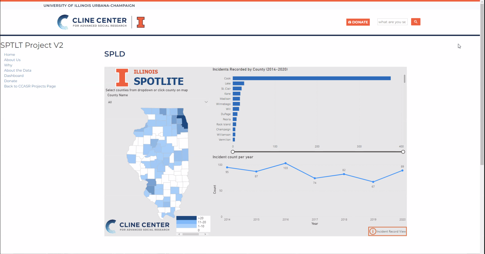
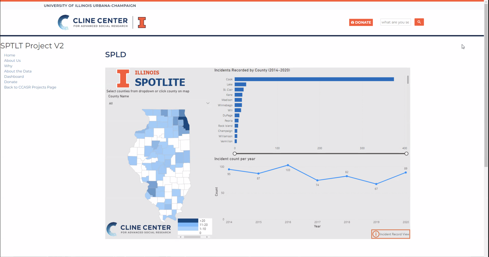
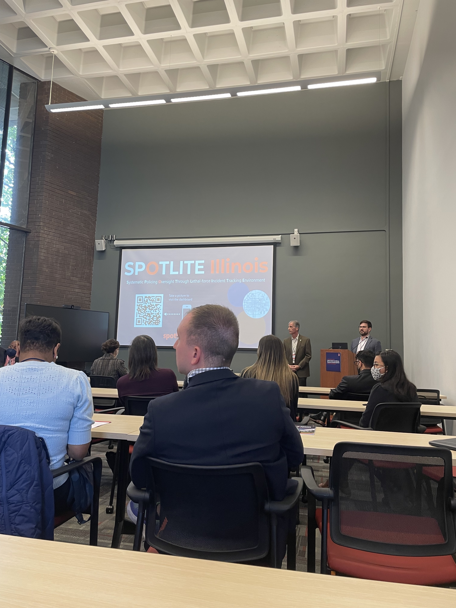
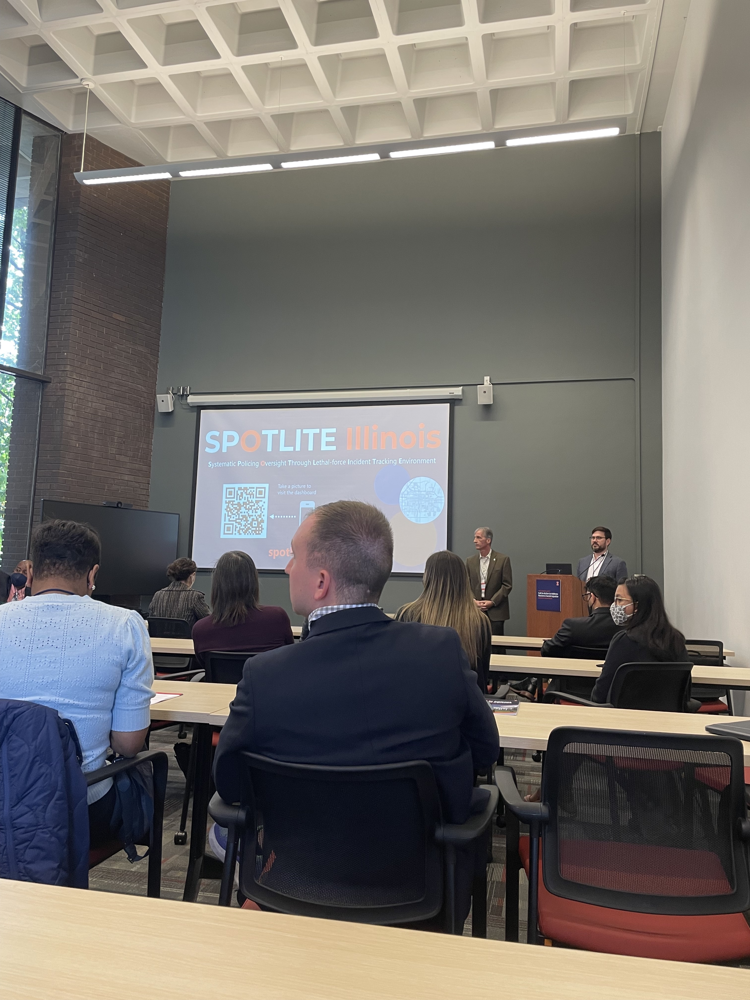

The Problem
The Cline Center for Advanced Research at the University of Illinois Urbana Champaign strives to provide the ability for the public to analyze critical social global challenges—like climate change and civil unrest— by providing powerful tools and data extracted from millions of news stories from around the world.
In the past few years, there’s been an upsurge in protest activity and police violence as a result of many social movements including Black Lives Matter. There’s still no authoritative national database of police uses of lethal force in the US — something that Cline is trying to remedy. Overall goal of this endevour is to start with putting out data from Illinois then eventually expand to a national scale. This will allow for anyone anywhere to see the amount of police related incidents occur in any county in an unbiased manner.
The Cline Center for Advanced Research at the University of Illinois Urbana Champaign strives to provide the ability for the public to analyze critical social global challenges—like climate change and civil unrest— by providing powerful tools and data extracted from millions of news stories from around the world.
In the past few years, there’s been an upsurge in protest activity and police violence as a result of many social movements including Black Lives Matter. There’s still no authoritative national database of police uses of lethal force in the US — something that Cline is trying to remedy. Overall goal of this endevour is to start with putting out data from Illinois then eventually expand to a national scale. This will allow for anyone anywhere to see the amount of police related incidents occur in any county in an unbiased manner.
The Solution
Our team was tasked with improving and implementing the SPOTLITE website (stands for Systemic Policing Oversight Through Lethal-force Incident Tracking Environment) by the intended public launch date: October 7th. The task was broken up into two parts:
1. Improve the functionality and appearance of the current KPI dashboard that displays statistics for police related lethal incidents by county in the state of Illinois
2. Design and implement sub website (as an addition to Cline’s main site) to host KPI dashboard and details of SPOTLITE project
Our team was tasked with improving and implementing the SPOTLITE website (stands for Systemic Policing Oversight Through Lethal-force Incident Tracking Environment) by the intended public launch date: October 7th. The task was broken up into two parts:
1. Improve the functionality and appearance of the current KPI dashboard that displays statistics for police related lethal incidents by county in the state of Illinois
2. Design and implement sub website (as an addition to Cline’s main site) to host KPI dashboard and details of SPOTLITE project
Initial vs. Final Product


The Process
Part 1: Initial Deep Dive and Secondary Research
Our first task was to improve the KPI dashboard that Cline had begun to put together on Power BI. During the first of weekly calls with Cline stakeholders, our team took away that the biggest point that they wanted us to focus on was to make sure that we were displaying info in an unbiased manner and that Cline had a clear vision for what the dashboard would look. The main pain points to tackle were that the dashboard was currently hard to read and that there was insufficient data for ever county.
As for the page that SPOTLITE would be hosted on, we began designing some preliminary pages and concept design on Figma.
Part 1: Initial Deep Dive and Secondary Research
Our first task was to improve the KPI dashboard that Cline had begun to put together on Power BI. During the first of weekly calls with Cline stakeholders, our team took away that the biggest point that they wanted us to focus on was to make sure that we were displaying info in an unbiased manner and that Cline had a clear vision for what the dashboard would look. The main pain points to tackle were that the dashboard was currently hard to read and that there was insufficient data for ever county.
As for the page that SPOTLITE would be hosted on, we began designing some preliminary pages and concept design on Figma.
Part 2: Design Sprint 1
During this phase of the project, our team designed iterations of the SPOTLITE site and recieved feedback at weekly meetings with Cline stakeholders and over Microsoft Teams for more rapid feedback. The Cline Center website is hosted through the Illinois Drupal framework so as a result, we determined that we wanted to match the design of this framework but wanted to differentiate it for it to look like a standalone site.
With iterations being made for the dashboard as well as website design, we began conducting user interviews. In order to gauge the effectivity of the dashboard, we interviewed 8 Cline student analysts with this general interview guide. We recieved constructive feedback and were able to apply changes accordingly. Although we weren’t able to conduct user interviews with those outside of Cline, we found these interviews to be invaluable in making the dashboard better.
During this phase of the project, our team designed iterations of the SPOTLITE site and recieved feedback at weekly meetings with Cline stakeholders and over Microsoft Teams for more rapid feedback. The Cline Center website is hosted through the Illinois Drupal framework so as a result, we determined that we wanted to match the design of this framework but wanted to differentiate it for it to look like a standalone site.
With iterations being made for the dashboard as well as website design, we began conducting user interviews. In order to gauge the effectivity of the dashboard, we interviewed 8 Cline student analysts with this general interview guide. We recieved constructive feedback and were able to apply changes accordingly. Although we weren’t able to conduct user interviews with those outside of Cline, we found these interviews to be invaluable in making the dashboard better.
Part 3: Design Sprint 2
During this phase, we began reaching a final design for the dashboard and website design through more iterations and feedback sessions. As a result, we began implementing the design in Drupal. Here is the Figma file we used to explore different designs for the SPOTLITE site:
During this phase, we began reaching a final design for the dashboard and website design through more iterations and feedback sessions. As a result, we began implementing the design in Drupal. Here is the Figma file we used to explore different designs for the SPOTLITE site:
Personal Takeaways
This was a very high paced project with a quick turn around time due to a concrete deadline. Taking in the role of project lead allowed me to explore how to grapple with uncertainty as well as improve my communication skills in order to get on the same page as the client.
This project required for me to use the content management tool, Drupal, that I was unfamiliar with so there was a learning curve when it came to implementing the final figma design. In the end, with the help of a Cline researcher, we were able to finish the site in time and I learned how to navigate the tool.
This was a very high paced project with a quick turn around time due to a concrete deadline. Taking in the role of project lead allowed me to explore how to grapple with uncertainty as well as improve my communication skills in order to get on the same page as the client.
This project required for me to use the content management tool, Drupal, that I was unfamiliar with so there was a learning curve when it came to implementing the final figma design. In the end, with the help of a Cline researcher, we were able to finish the site in time and I learned how to navigate the tool.
Launch Day
On October 7, the SPOTLITE site was launched by the Cline Center at the Chancellor’s “Call To Action” symposium at UIUC. The SPOTLITE team at Cline had been collecting the data that went into this dashboard since 2017 and were able to successfully launch the database to the public.
Check out the final website here!

On October 7, the SPOTLITE site was launched by the Cline Center at the Chancellor’s “Call To Action” symposium at UIUC. The SPOTLITE team at Cline had been collecting the data that went into this dashboard since 2017 and were able to successfully launch the database to the public.
Check out the final website here!
